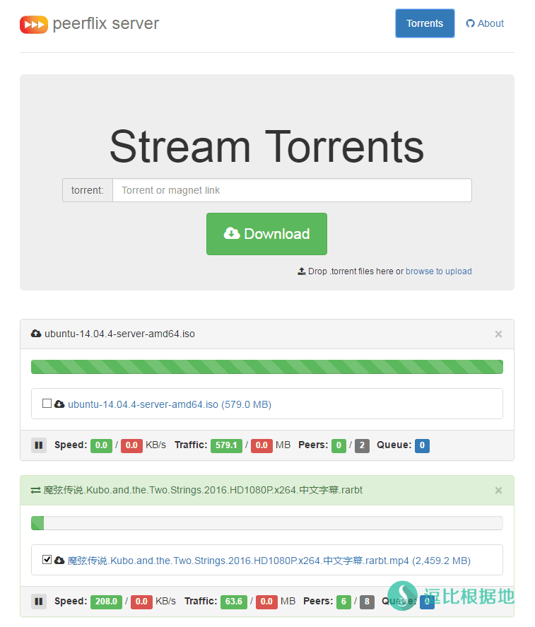

前几天在发布了Cloud Torrent的一键脚本和使用教程后，留言评论里又有一个逗比，提供了一个功能类似的工具，我就稍微研究了一下，又写了一个一键脚本来安利给各位老死机了。
PS：大家不要吐槽我的起标题功力！

声明：本文章仅提供 BT/磁力链接 下载工具的安装方法和说明，任何使用此工具 下载版权侵权文件或导致任何经济损失，皆和本人无任何关系！如果你不同意或有异议，请关闭这个网页！
系统需求
CentOS / Debian / Ubuntu 都可以，这个工具是Node.js的一个模块，所以需要安装Node.js。
不过，本人测试系统为 Debian 7 x64 建议使用这个。
脚本版本：
Ver: 1.1.0
Peerflix Server特点
- 支持 BT下载
- 支持 磁力链接下载
- 支持 上传BT文件
- 支持 离线下载
- 支持 边下边播( 格式限制：mp4/wbem/ogg )
- 可视化界面 Web UI
与Cloud Torrent的区别
安装步骤
wget -N --no-check-certificate https://raw.githubusercontent.com/ToyoDAdoubiBackup/doubi/master/pserver.sh && chmod +x pserver.sh && bash pserver.sh
安装完成之后，就会提醒你，输入要开放的端口（默认 9000）
请输入 Peerflix Server 监听端口 [1-65535] (默认端口: 9000): ======================== 端口 : 9000 ======================== Peerflix Server 信息： 浏览器访问，地址： http://VPS_IP:9000
启动后，访问http://VPS_IP:9000即可看到Web UI界面了。
使用说明
脚本使用说明
bash pserver.sh
然后就会看到菜单，输入对应选项的数字即可。
请输入一个数字来选择选项 1. 安装 Peerflix Server 3. 卸载 Peerflix Server ———————————— 4. 启动 Peerflix Server 5. 停止 Peerflix Server 6. 重启 Peerflix Server ———————————— 7. 设置 Peerflix Server 端口 8. 查看 Peerflix Server 信息 9. 查看 Peerflix Server 日志 ———————————— 当前状态: 已安装 并 已启动
Peerflix Server 使用说明
文件位置
Peerflix Server是Node.js的一个模块，所以也安装了Node.js。
Node.js 安装目录：/etc/node
Peerflix Server 安装目录：/etc/node/lib/node_modules/peerflix-server
Peerflix Server 下载目录：/tmp/torrent-stream
日志文件：/tmp/peerflix-server.log
一些人可能想要自己修改网页的式样，你可以去这里修改网页文件。
网页文件：/etc/node/lib/node_modules/peerflix-server/dist
注意事项
BT和磁力链接的速度是和， 磁力链接/BT 的用户上传共享量 和 中心服务器的宽带质量，以及你下载 磁力链接/BT 的VPS的宽带有关系。
这种软件在某些程度上比不上 国内的迅雷，毕竟迅雷 用户了很大共享了很多的上传速度，而且还有缓存的中心服务器，所以才会那么快。
Peerflix Server 因为啥Node.js的模块，所以还支持 Windows 平台，不过暂时我没打算写windows的教程。
如果你是国外的VPS，特别是美国的，一定要注意下载 BT/磁力链接 容易遇到蜜罐，然后被投诉封VPS。建议使用欧洲的罗马尼亚，那里的VPS无视版权，当然拉回本地，速度肯定也不会多快。
无法访问你的 http://IP:端口
提示wget: unknown host “raw.githubusercontent.com” 之类的错误
提示 wget: command not found 的错误
更新日志
2018年08月01日，Ver 1.1.0
1.重写脚本。
因为脚本仅仅是临时写出来的，所以可能会有一些BUG，如果发现请在下面留言，如果需要什么新功能，记得也留言联系我。
其他的支持离线下载 BT和磁力链接的教程：https://doub.io/all-one/#BT、磁力链接下载 相关教程
GitHub项目地址（感谢作者）：https://github.com/asapach/peerflix-server
转载请超链接注明：逗比根据地 » 『原创』支持 BT(磁力链接)、离线下载和边下边播的老司机坐骑 —— Peerflix Server 一键脚本
责任声明：本站一切资源仅用作交流学习，请勿用作商业或违法行为！如造成任何后果，本站概不负责！


看来不行。btw，github项目那里 You can configure the application using ~/.config/peerflix-server/config.json file (doesn't exist by default). The options are passed to all torrent-stream instances. Here's an example that overrides the defaults: 配置文件在 ~/.config/peerflix-server/config.json 需要自行创建。 不知道TOyo的路径是不是改了呢？ 还有以下是作者给出的配置文件说明 { connections: 100, // Max amount of peers to be connected to.最大种子连接数 uploads: 10, // Number of upload slots.最大上传数？？？ tmp: '/tmp', // Root folder for the files storage.下载根目录 // Defaults to '/tmp' or temp folder specific to your OS.默认使用你系统的临时文件夹目录 // Each torrent will be placed into a separate folder under /tmp/torrent-stream/{infoHash}每个种子文件会放在/tmp/torrent-stream/（hash值命名）的单独文件夹内 path: '/tmp/my-file', // Where to save the files. Overrides `tmp`. 下载目录 verify: true, // Verify previously stored data before starting下载前确认 // Defaults to true默认设置 true dht: true, // Whether or not to use DHT to initialize the swarm.使用DHT么？ // Defaults to true tracker: true, // Whether or not to use trackers from torrent file or magnet link // Defaults to true 使用TRacker：true trackers: [//trackers服务器列表 'udp://tracker.openbittorrent.com:80', 'udp://tracker.ccc.de:80' ], // Allows to declare additional custom trackers to use // Defaults to empty storage: myStorage() // Use a custom storage backend rather than the default disk-backed one 不懂，请解惑 }这个办法不错，吧2333转发到9000，然后把9000端口封了，不允许访问，这样就只能2333访问了，我有空试试。查了半天，程序监听的是 0.0.0.0:9000 只允许2333端口转发访问9000，而不能直接访问 9000 ，找不到什么方法，也就清楚端口转发，但是无法让 9000 端口不能直接访问。根据作者提供的方法，我研究了一下，解决了端口自定义的问题，请更新脚本
1.0.3。而且用这个软件的人越多，贡献的上传流量越多，你下载就越快。